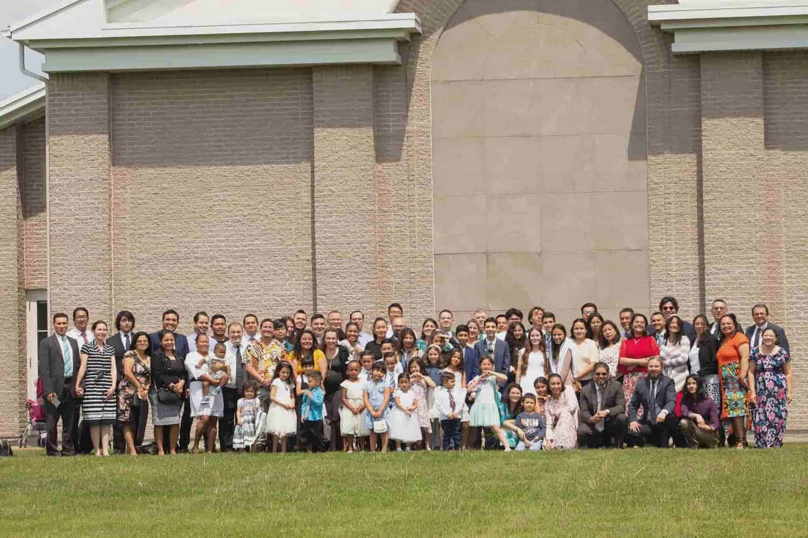
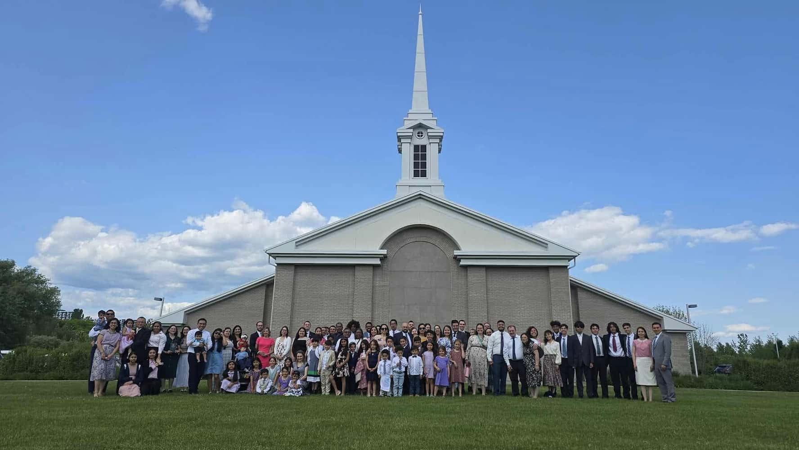
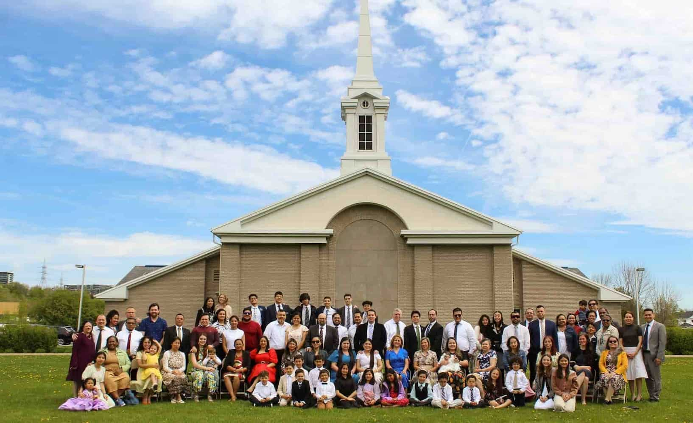

About our Branch!

Saint-Laurent Spanish branch was created in June 5, 2023 and currently has 3 years since it was created. We are a Branch of the Church of Jesus-Christ of Latter Day Sains. We invite everyone to come and experience the love and joy the Gospel of Jesus-Christ brings.
In our branch, we have many activities and events to spend time together as a branch and create memories! We also have many trips to the temple to get closer to God and feel His love even more in our lives.

We worship our Lord and Savior Jesus-Christ and our beloved Heavenly Father each Sunday by participating of the sacrament meeting, an ordonnance where we takeof the bread and water in rememberance of the Atonement of Jesus-Christ. Each branch has a specefic time each Sunday to have their sacrament meeting and partake of the Sacraments. You can look at each branches time in Schedules and more.
We invite you wherever you may be to turn to God and follow His example. He will bless your life in every aspect. We testify of these things.

We are Disciples of Christ and try to always be like Him and do the things He has commanded us to do. We serve, love, help, find joy and hope by sharing scriptures, teach one another, and most importantly, share the love God has for each and everyone of His beloved Children. We give hope to those in need, we donate to those who need. As a branch, we testify that the Church and the Gospel of Jesus-Christ Of Latter Day Saints is the true restored Gospel and church. We testify that God forgives our sins if we turn to him and obey his commandments, serve him, and always repent and do better each day.
Meet the Presidency!
Visit our Schedules Page for information on hours and time for our sacrament meetings and others' too!